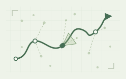
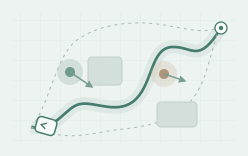
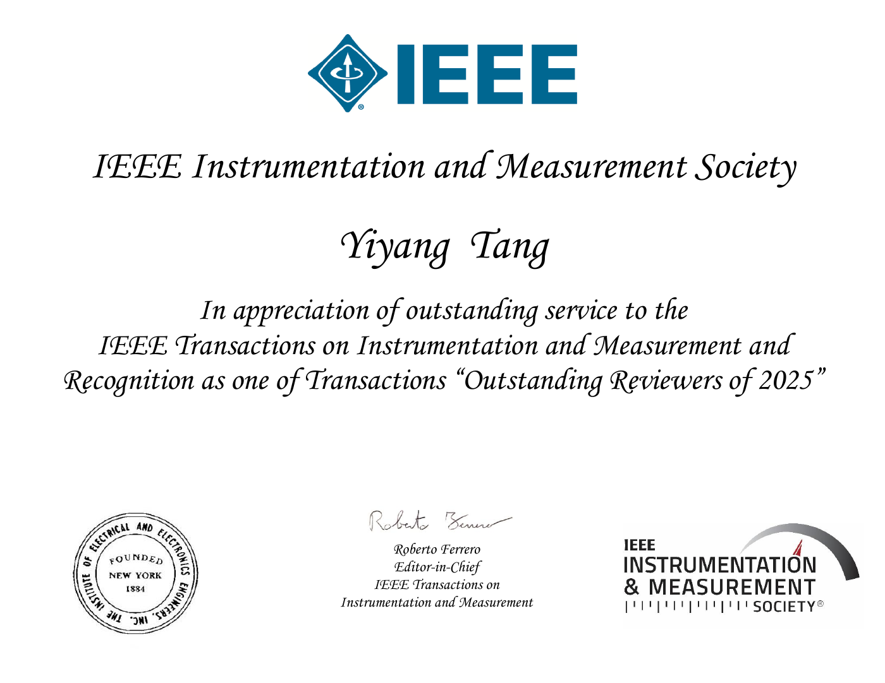

Robust perception & SLAM
Developing reliable perception and localization under complex dynamic disturbances, with an emphasis on robust state estimation and spatial understanding.
I am a PhD student at Harbin Engineering University, advised by Prof. Yulong Huang. His research focuses on state estimation and filtering theory, and he serves as an Associate Editor of IEEE Transactions on Automatic Control and IEEE Transactions on Automation Science and Engineering.
My research focuses on robotic perception, navigation, and decision-making. I am particularly interested in enabling robots to accomplish navigation tasks safely and efficiently in dynamic environments.
Specifically, I study robust perception and SLAM under complex dynamic disturbances, as well as navigation and decision-making for challenging tasks such as target following.
Profile information is being updated.

Developing reliable perception and localization under complex dynamic disturbances, with an emphasis on robust state estimation and spatial understanding.

Studying how robots can complete navigation tasks safely and efficiently while adapting to moving obstacles and changing surroundings.
Exploring navigation and decision-making for demanding tasks such as target following in complex, dynamic environments.
Research updates and announcements will appear here.
IEEE International Conference on Electronic Engineering and Information Systems (EEiSS) · 2026
Visual semantic segmentation and two-stage verification remove dynamic points missed by LiDAR detection while preserving valid static measurements.
IEEE/RSJ International Conference on Intelligent Robots and Systems (IROS) · 2025
Adaptive measurement clustering and per-cluster noise estimation for visual-inertial odometry in challenging outdoor environments.
Selected papers will be added here soon.
IEEE Transactions on Robotics · Second-round review (unpublished)
Robust visual–inertial odometry designed for challenging environments with multiple concurrent disturbances, including illumination changes, motion blur, and texture variations.
Submit Soon · Unpublished
Pedestrian following for mobile robots in complex, obstacle-rich environments, explicitly accounting for chassis motion constraints to improve the safety, continuity, and adaptability of autonomous following.

Editorial, reviewing, and community activities will be added here.
For research inquiries and collaboration, please get in touch by email.